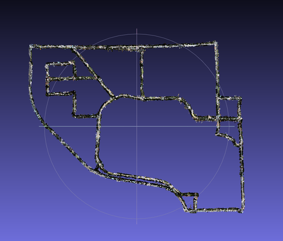

CS 4476 Intro to Computer Vision
Summer 2019, MW 15:30 to 17:20, Architecture (East) 207
Instructor: Zhaoyang Lv
TAs: Miao Liu, Ankit Arora

Course Description
This course provides an introduction to computer vision including fundamentals of image formation, camera imaging geometry, feature detection and matching, stereo, motion estimation and tracking, image classification and fundamentals in convolutional neural networks. We'll develop basic methods for applications that include finding known models in images, depth recovery from stereo, camera calibration, image stabilization, automated alignment, tracking, boundary detection, and recognition. The focus of the course is to develop the intuitions and mathematics of the methods in lecture, and then to learn about the difference between theory and practice in the projects.The design of this course refers to the CS4476/6476 Computer Vision offered by Prof. James Hays.
Learning Objectives
Upon completion of this course, students should be able to:- Recognize and describe both the theoretical and practical aspects of computing with images.
- Describe the foundation of image formation and image analysis. Understand the basics of 2D and 3D Computer Vision.
- Become familiar with the major technical approaches involved in computer vision. Describe various methods used for registration, alignment, and matching in images.
- Understand the fundamentals about deep learning in computer vision.
- Get an exposure to advanced concepts of computer vision using deep learning.
- Build computer vision applications.
Prerequisites
No prior experience with computer vision is assumed, although previous knowledge of visual computing or signal processing will be helpful. The following skills are necessary for this class:- Data structures: You'll be writing code that builds representations of images, features, and geometric constructions.
- Programming: Projects are to be completed and graded in Python.
- Math: Linear algebra, vector calculus, and probability. Good understanding of linear algebra is extremely helpful for students to follow this course. Please review the relevent content during the study of this course.
Grading
Your final grade will be made up from- 70% 5 programming projects (The first one is 10% and the other four are 15% each);
- 30% a written final
Late submissions Grading: You will lose 20% of your score for each day when you are late. A submission that is late for 5 days gets no points even if it is 100% correct.
There are three "late days" in total you can use for the whole course. If you want to use 1-3 late days for a project, please indicate clearly in Canvas that you want to use one late day or more for that submitted project. Otherwise, we will deduct your points based on the late-time according to our policy. If you have already used 3 late days in previous projects, we will not accept the late day request in the rest of the projects.
These late days are intended to cover unexpected clustering of due dates or your travels. We will not give more extra days for any particular reasons. Please plan your time ahead regarding using the late days.
Some of the projects have extra credits as explained in the project websites. You may use the extra credits as opportunities to improve your accumulated project scores in cases you did not do very well in other projects. Please note, the upper bound of project score accumulated is 70/100.
Academic Integrity
Academic dishonesty will not be tolerated. This includes cheating, lying about course matters, plagiarism, or helping others commit a violation of the Honor Code. Plagiarism includes reproducing the words of others without both the use of quotation marks and citation. Students are reminded of the obligations and expectations associated with the Georgia Tech Academic Honor Code and Student Code of Conduct, available online at www.honor.gatech.edu. For quizzes, no supporting materials are allowed (notes, calculators, phones, etc).You are expected to finish all projects independently. You are encouraged to discuss questions, but not refer to each other's implementations. Please indicate clearly who you have discussed with in the submitted projects. You do not need to worry that you may lose any points even if you get help from half of the class to finish your projects. And it is always good to give credits to those who help you finish your work.
Learning Accommodations
If needed, we will make classroom accommodations for students with documented disabilities. These accommodations must be arranged in advance and in accordance with the ADAPTS office (www.adapts.gatech.edu).Contact Info and Office Hours:
If possible, please use Piazza to ask questions and seek clarifications before emailing the instructor or staff.- Piazza for CS 4476
- Zhaoyang Lv: zhaoyang.lv[at]gatech.edu
- Miao Liu: mliu328[at]gatech.edu
- Ankit Arora: anki[at]gatech.edu
- Instructor and TAs: Monday, Wednesday, 5:20 pm to 6:20 pm, Architecture East 207.
- TAs hours: Tuesday (from May 21) 3:00 pm to 5:00 pm, TSRB Room 226
- TAs hours: Thursday (from May 23) 3:00 pm to 5:00 pm, TSRB Room 222
Textbook
Readings will be assigned mostly in "Computer Vision: Algorithms and Applications" by Richard Szeliski. The book is available for free online or available for purchase. For neural network relevant context, we will read several lectures notes from the Stanford CS 231 lecture notes .Syllabus
subject to updates according to the course progress| Class Date | Topic | Slides | Reading | Projects |
| Mon., May 13 | Course Introduction | Szeliski 1 | ||
| Wed., May 15 | Image Formation and Filtering | Szeliski 2, 3.2 | Project 1 Out | |
| Mon., May 20 | Feature Detection | Szeliski 4.1.1 | ||
| Wed., May 22 | Feature Descriptor and Matching | Szeliski 4.1.2 and 4.1.3 | Project 1 Due | |
| Mon., May 27 | No classes, Institute holiday | Project 2 Out | ||
| Wed., May 29 | Feature-based Alignment | Szeliski 6.1 | ||
| Mon., June 3 | Calibration and Projective Geometry | Szeliski 6.2 | ||
| Wed., June 5 | Stereo Camera and Epipolar Geometry | Szeliski 11.1 | Project 2 Due | |
| Mon., June 10 | Dense Correspondences and Optical Flow | Szeliski 8.4 and 11.6 | Project 3 Out | |
| Wed., June 12 | Image Mosaic, Structure from Motion and Multi-view Stereo | Szeliski 7.2 | ||
| Mon., June 17 | Machine Learning Basics in Computer Vision (Guest Lecture by Miao Liu) | Stanford CS 231 note: 1, 2 | ||
| Wed., June 19 | Object Tracking (Guest Lecture by Chanho Kim) | |||
| Mon., Jun 24 | Recognition and Detection (Guest Lecture by Zhile Ren) | Szeliski 14.1, 14.2 | Project 3 Due | |
| Wed., June 26 | Image Retrieval | Szeliski 14.3, 14.4 | Project 4 Out | |
| Mon., July 1 | Image Segmentation | Szeliski 5.1-5.4 | ||
| Wed., July 3 | Neural Network Basics | Stanford CS 231 note: 1, 2, 3, 4 | ||
| Mon., July 8 | Modern Convolutional Neural Networks | Stanford CS 231 note: 1, 2 | Project 4 Due | |
| Wed., July 10 | Modern Methods in Deep Learning (1) | Project 5 Out | ||
| Mon., July 15 | Modern Methods in Deep Learning (2); Review | |||
| Wed., July 17 | In-class Exam | |||
| Mon., July 22 | No classes, reading period | Project 5 Due | ||
| Final Exam Period (Not used) |